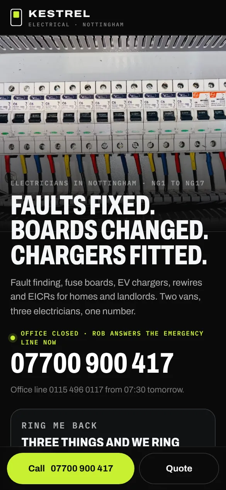

The survey booked, the quote chased, the service remembered.
A security installer’s website needs the systems you fit, from intruder alarms and CCTV to access control and video doorbells, photos of tidy installs and a way to book a free survey online. It should then follow up every quote and remind each customer when their maintenance visit is due, because the install is one sale and the yearly service is what keeps the diary steady.

What should a website for alarm and CCTV installers do?
- The systems you fit: intruder alarms, CCTV, access control, door entry and video doorbells, for homes and businesses.
- Photos of finished installs, neat cable runs and camera views from your own jobs.
- Online booking for a free survey, with a short form about the property and what worries the customer.
- Any inspectorate approval you hold, such as NSI or SSAIB, and whether you offer monitoring or keyholding.
- The areas you cover and your insurance.
How do customers choose a security installer?
People look for an alarm or cameras after a break-in nearby, a move, or a question from their insurer. They want to know what would suit their home or shop, what it involves and whether you can come and look, and they often ask two or three installers. A survey leads to a quote, and the quote can sit for a while as they think it over. Once the system is in, it needs servicing every year, and that work depends on someone remembering to book it.
The three automations that matter most
Service reminders
Alarms and cameras need a yearly service. A reminder sent when it is due, with a link to pick a date, fills the diary with maintenance visits you did not have to chase.
How it worksQuote chasing
A security quote is often weighed up for a while. A follow-up a few days later, and again if it goes quiet, keeps you in front of the customer when they decide.
How it worksMissed-call text-back
When you are up a ladder fitting a camera, the caller gets a text with a link to book a survey instead of trying another installer.
How it worksTry it as a security installer
The live demos, set up for alarm and CCTV installers with a made-up business. You play the customer, then see what you would see.

The CRM board
Move a lead from enquiry to done and watch the follow-up texts and review request send themselves.Try it About a minute · works on your phone
Book and pay a deposit
Book a job on your own website at 10pm, pay the deposit, then find it in your diary the next morning.Try itBuilds that fit
Working builds for made-up businesses. Open any of them on your phone and use it.


Alarm and CCTV installers: questions people ask
Can customers book a security survey online?
Yes. They choose a time, describe the property and what they are worried about, and get a confirmation with what the survey involves and a reminder the day before.
How do I remind customers their alarm service is due?
Each install keeps its service date. When the next visit is due, the customer gets a message with a link to choose a time, and a reminder before you arrive.
Should I show NSI or SSAIB approval on my website?
If you hold it, yes, near the top of the page. Customers and their insurers often look for an approved installer before booking a survey.
More in every question, answered.